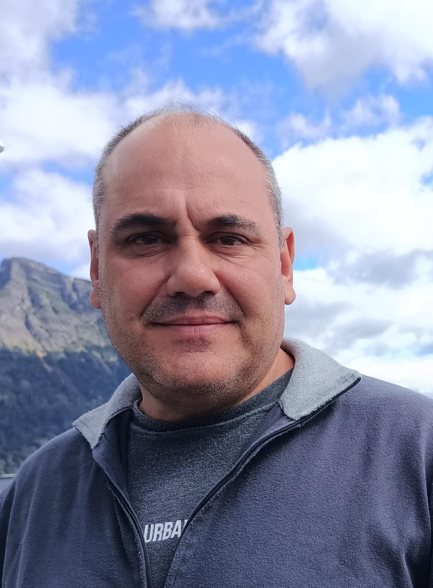
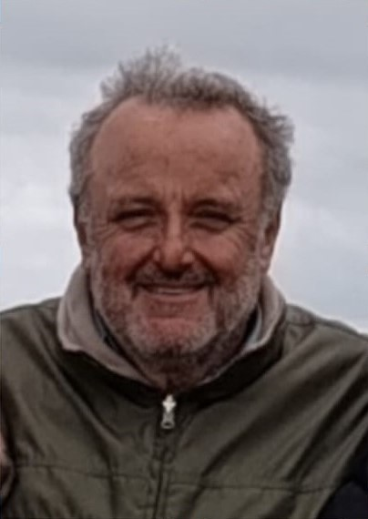

Raices de las sierras
Una historia que crece con la tierra
Somos Gastón Osvaldo Oregioni y Marcelo Santiago Pagola, amigos de toda la vida, unidos desde la infancia por un mismo sueño: construir juntos un proyecto familiar ligado a la naturaleza. Aunque los caminos personales nos llevaron por distintas experiencias, la amistad —y ese anhelo compartido— siempre se mantuvieron firmes.
Hoy, ese sueño toma forma en un emprendimiento de Vivero Productor de plantas forestales, arbustivas y asesoramiento integral en temas relacionados a paisajismo y forestación, en todos sus aspectos, con base en Tandil y una fuerte impronta ambiental. Más que forestar, buscamos regenerar el paisaje, promover la biodiversidad y devolverle algo a la tierra que tanto nos dio.
Este proyecto es el fruto de una pasión, de vínculos genuinos y de una mirada a largo plazo. Cada árbol que plantamos lleva nuestra historia.
Contribuir al equilibrio ambiental mediante la plantación responsable de especies forestales, promoviendo el desarrollo sustentable, la regeneración de ecosistemas y el compromiso con la tierra en la región de Tandil y alrededores.
Ser referentes en el desarrollo forestal sustentable del sudeste bonaerense, impulsando prácticas que armonicen producción, biodiversidad y conciencia ambiental para las futuras generaciones.

